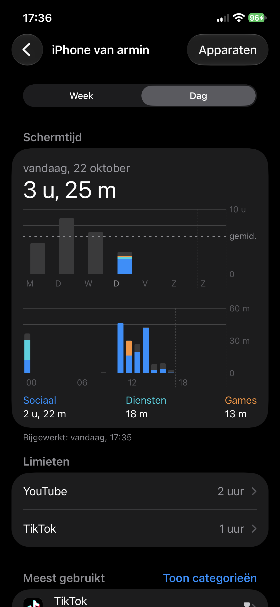

Mijn probleem met het internet
Het grootste probleem aan het internet vind ik de verschillende vormen van verslaving die het met zich meebrengt, denk aan het eindeloze scrollen en het verspillen van je tijd op sociale media. Ik heb hier zelf heel erg last van, ik zit veel te vaak en te lang op mijn telefoon, terwijl ik dan ook andere dingen kan doen. Ik merk dat het iets is waar ik niet bewust van ben terwijl ik het doe, wat dus zorgt voor lange sessies van het zitten op mijn telefoon. Ook zorgt het ervoor dat normale dagelijkse taken veel langzamer gaan. Zelf merk ik dat als ik geen telefoon binnen bereik heb, mijn leven veel efficiënter en fijner is. Als voorbeeld had ik laatst een dag waarbij mijn telefoon onderhoud had, die dag ging ik iets doen met wat vrienden, en ik merkte dat ik het eigenlijk heel fijn vond dat ik geen telefoon had. Waarom stop ik dan niet gewoon met het gebruiken van mijn telefoon?
Waarom de verslaving moeilijk te stoppen is
Het voorkomen van een verslaving aan je telefoon is moeilijk, dit heb ik zelf ook vaak geprobeerd. Ik heb geprobeerd om tijdslimieten in te schakelen, apps volledig te verwijderen en mijn telefoon volledig weg te leggen. Al deze dingen werkten misschien een week, maar ik val altijd terug en maak eigenlijk nooit progressie. Het is moeilijk om te stoppen met iets waar je al bijna je hele leven last van hebt. Ook helpt het niet dat je zonder telefoon veel mist, je krijgt niks meer binnen via sociale media waardoor je eigenlijk een sociale achterstand krijgt. Door modernisering en omdat iedereen een telefoon heeft is het moeilijk om zomaar compleet te stoppen met het gebruik van je telefoon.

Mijn internet ideaal zonder verslaving
Wat ik zou willen voor het internet is dat alle elementen die verslaving opwekken volledig worden weggehaald, zodat het iets wordt waar je wel nog informatie kan opzoeken en creativiteit kan delen, maar alles wat het internet verslavend maakt weg wordt gehaald. Dat techbedrijven stoppen met je aandacht te gebruiken als geldbron, Want niks in deze wereld is belangrijker dan tijd.